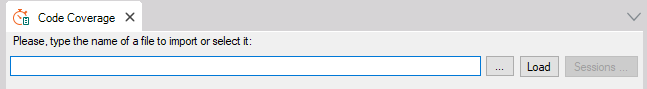
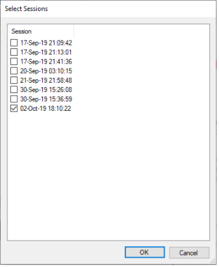
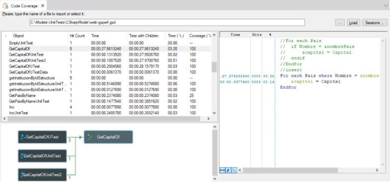

This feature in GeneXus lets you know to which degree the code you wrote in a program is executed. It is used also to help fix performance problems by means of running the application and keeping track of what was executed, how many times, and for how long. On this page, you will find information on how to configure GeneXus to generate source-level runtime code coverage and performance information and analyze the results. Set upFirst, you must set the Generate Code Coverage information property to 'Yes' and rebuild all Getting code coverage informationOnce the Rebuild All operation finishes, run the objects you are interested in. A file named “gxperf.gxd” will be created (or updated in case it is not your first code coverage run for the environment). To open this file, go to the GeneXus menu “Test” -> “Code Coverage”. A document window will be opened, where you must select “...” and locate the file under “<KBLocation>/<EnvironmentPath>/web/gxperf.gxd” path.  Once you selected the file, a prompt window is shown to select which session you are interested to see. Select all you want and click “OK”  Now Code Coverage window is updated like this:  On this window, every object involved in selected executions is loaded with information about hit count, time, time with children, time percent and coverage. Also, when an object from this list is selected, a graph indicating the call tree is shown and the line codes with their respective trace information too. What is being measured with an object or line granularity:
A clarification about the percentage shown in the Coverage (%) column, if you choose to load N sessions and:
AdvancedYou can change the name of the generated file by running command line procedures adding an extra flag:
AvailabilityThis property is available since GeneXus 16 upgrade 8. See Also
|
| Backlinks | ||
| Generate Code Coverage information property | ||
| Toc:GXtest v4 | Profiling in GeneXus (GeneXus 16 Upgrade 7 or prior) | Profiling in GeneXus (GeneXus 16 Upgrade 7 or prior) |
| Test Coverage |